Na rynku są dwa rodzaje komputerów gotowce i "składaki". W gotowcach nie mamy możliwości zmiany komponętów, a w "składakach" możemy sobie wybrać takie jakie chcemy. Jest z nimi tylko jeden problem.Trzeba znać się na częściach. Tym sie właśnie zajmiemy i jak sobie taki wybrać/zrobić komputer. Skupie się na głównych rzeczach i podam tylko informacje dotyczących podstawowych konsumentantów, nie będą pisał o rzeczach do zastosowań profesionalnych!
Zaczynamy, żeby sobie zrobić komputer trzeba spełnić wszyystkie punkty:
- Budżet-pozwoli na dostosowanie elementów
- Procesor
- Chłodzenie procesora
- Płyta główna
- Karta graficzna
- Pamieć ram
- Dyski
- Obudowa
- Zasilacz
Jeśli, naprawde ktoś nie chce się zagłebiać w tą tematyke tylko chce komputer "składak",
który często jest tańszy niż gotowiec z podobnymi częściami.
To w takim razie podaje linki niżej z polecanymi zestawami komputerowymi.
Takie zestawy są co miesiąc aktualizowane.
Polecane zestawy#2
Polecane zestawy#3
Zacznijmy od serca komputera, czyli procesora.
Są dwa rodzaje procesorów:
- Intel
- Amd
Zacznijmy od Intel.
Zacznijmy od socketów. Teraz najbardziej rozpowszechniony jest socket 1151,
czyli 9-generacja procesorów wychadzących od Intela.
Oczywiście 8-generacja będzie pasować do tego socketu.
Co oznaczają litery/cyfry przy procesorze w desktopach?
Już mówie:
Litery oznaczają to:
- k-procesor można podkręcić(oc),jest najdroższy z tą literką, ale można zrobić oc.
- f-procesor nie ma zintegrowanej grafiki,procesor jest tańszy niż bez rzadnych dopisków, bo nie ma grafiki
- kf-procesor można podkręcic i nie ma zintegrowanej grafiki,jest tańszy niż z samą literą k, bo nie ma grafiki
Dla kogo zatem jest procesor Intel?
Jest on dla graczy i osób, które nie potrzebują wielowątkowości procesora,
do użytku codziennego też się nadaje.
Procesor Amd.
W Amd najbardziej znanym teraz i popularnym socketem jest socket am4. W procesorach od Amd praktycznie wszystkie procesory da się podkręcić to ich różni od Intela.
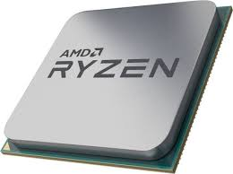Oznaczenia w Amd są praktycznie nie ważne. Nic nie zmieniają oprócz:
- f-nie ma zintegrowanej grafiki
Dla kogo jest Amd
Amd jest dla graczy i dla osoób poszukjących wielowątkowości,
do użytko codziennego też się nadaje.
Ciekawostka.
Kiedyś Intel i Amd się połączyło oraz zrobili kilka procesorów. Dosłownie można policzyć na
palcach u jednej ręki. Później się rozdzielili, bo im nie wyszło.
Chłodzenie procesora
Jeśli podjeliśmy decyzje co do procesora, to teraz pora na jego chłodzenia. Intel: Będzie nam do tego potrzebna znajomość socketu jaki ma procesor. Wiele chłodzeń ma listę kompatybilności z większością socketów. Jeśli macie intela z samym dopiskiem f (wszystkie procesory intela mają chłodzenie(procesory nie licząc do profesionalnych zastoswań) oprócz tych z dopiskiem k tak mniej więcej) wystarczy chłodenie w zestawie. A jeśli po przeczytaniu nie będziecie wiedzieli jakie dobrać chłodzenie do procesora to odsyłam was do polecanych zestawów (podawałem na początku artykułu), wystarczy poszukać odpowiedniej sekcji z wyborem swojego procesora i budżet oraz zobaczyć propozycje podanych tam podzespołów.
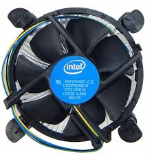AMD:Jeśli nie będziemy podkręcać wystarczy chłodzenie w zestawie(nie licząc threadripper), ale lepiej obejrzeć recenzję danego procesora, to też liczy się do Intela.
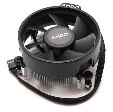Polecam ten filmik do obejrzenia
Tutaj podam propozycje i wielkość wentylatorów.
Fera 3-120mm
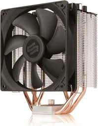Fortis 3-140mm
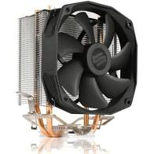Grandis 2 -120mm i 140mm
Teraz tak zwane chłodzenia cieczą AIO(z ang. all in one)
Ich wielkości zaczynają sie od jednego wentylatora 120mm, a kończąc na czterech 120mm.
Są też oczywiście konfiguracje takie jak:(najbardziej znane)
- 2x120mm
- 2x140mm
- 3x120mm
- 3x140mm
120mm
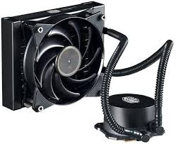3x120mm
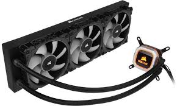Ostatnie chłodzenie to chłodzenie autorskie.
Czyli chłodzenie, które wysztkie częsci kupiję się oddzielnie m.in.:
- pompe
- specialną ciecz
- radiator
- wentylatory
O to jeden przykład:
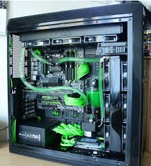Płyta główna
Zacznijmy od chipsetów. Nie bedę sie rozdrabniał w tym temacie, napisze najważniejsze rzeczy.
Dla Intela dla 9. i 8. generacjii najnowszym chpsetem jest chipset Z390.
Jest też w sprzedaży B360 i H360 ale na nich nie można podkręcać procesora.
Moim zdaniem nadają się do najtańszych rozwiązań pc. W niektórych płytach można spotkać wbudowane wifi.
Jeśli ktoś potrzebuję wifi, ale nie ma w płycie to można dokupić na wejście pcie express lub usb.
Dla Amd nie ma znaczenie na jakim chipsecie się umieści procesor, jeśli chce się podkręcać wystarczy patrzeć na sekcje zasilania.
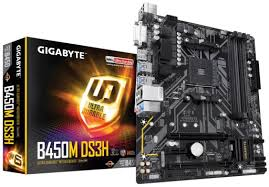Nie pomyl się w płytach, bo Intel na płycie ma "ząbki", w które wkłada się procesor.
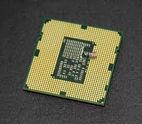Sam chipset wygląda tak:
Amd za to ma "ząbki" na procesorze i sam chipset ma takie jakby dziurki w sobie.
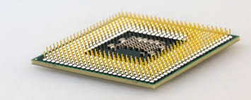Chipset wygląda tak:
Karta graficzna
Karty graficzne pochadzą z dwóch miejsc od:
- Nvidia 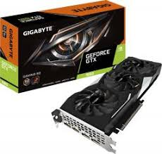
- Amd 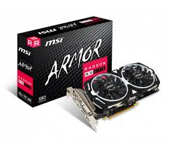
Różne firmy produkują karty graficzne. Najbardziej znanymi i lubianymi są:
- Msi
- Asus
- Gigabyte/Aorus
Pamięci ram
Tutaj nie ma za dużo do powiedzenia. Do Amd najlepsze ramy są z dużą częstotliwością, wtedy podbija to wyniki.
Taką optymalną częstotliwością jest 3000MHz i 3200MHz.
Dla Intela nie ma to większego znaczenia. Pobija to tylko wielofunkcyjność
Ilość pamięci do biura, pracy i użytku domowego wystarcz 8GB.
Do gier i to takiego małego użytku profesjanolnego powinno wystarczyć 16GB.
Do użytku profesionalnego zaczynałbym od 32BG
Polecane firmy:
- Corsair
- Aegis
- Patriot
- Adata
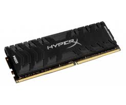
Dyski
Dyski to temat sporny każdy potrzebuje pamięci na dane. Nie którzy więcej, a nie którzy mniej.
Zaczniemy od dysku HDD. Jest ona najstarszy, nie jest taki wolny, ale jest najrańszy za największą ilość pamięci.
Nie bez powodu jest nazywany dyskiem talerzowym. Ma w środku taki talerz.
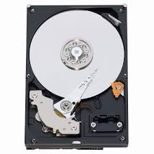Teraz ssd. Są różne rodzaje dysków ssd. Takie jak:
- 2,5"-jest on najwolnieszy od innych ssd ale o wiele szybszy niż hdd. Jest bardzo popularny.
Montuje się go na sata.
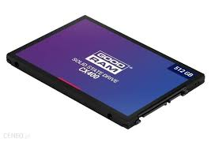
- M.2-Jest on o wiele szybszy niż 2,5". Jest też troche droższy niż wcześniejszy ssd.
Montuje się go na płycie głównej.
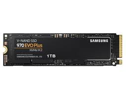
- PCI-Express-Jest ona najdroższy(bardzo drogi,stosuje się go profesionalnie), ale najszybszy.
Montuje się go w takim samym miejscu co karta graficzna w PCI-Express.
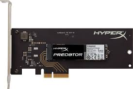
Obudowa
To jest wybór samodzielny. Wystarczy zobaczyć czy jest kompatynilna z płytą główną. Czyli czy obługuje mAtx czy Atx.
Nie pisałem tego, wystarczy to zobaczyć w specyfikacji płyty głównej. Warto obejrzeć recenzję.
Podam najbardziej znane i lubiane firmy:
- Silentiumpc
- BeQuiet
- Corsair
- Msi
Tu są obudowy, które są nie typowe.(wg. mnie)
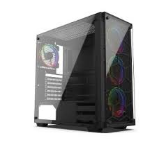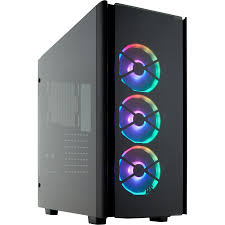
Zasilacz
Zasilacz zależy od komponentów, poniewż gdy będzie za mało mocy do się nie odpali. Polecam taki kalkulator.
Służy on do liczenia ilości mocy, ale jeśli ktoś będzie podkręcał to trzeba tam zanczyć, powidamiam.
Są tam tylko zasilacze firmy bequiet, ale wystarczy zobaczyć pobór mocy i jaki certyfikat. Certyfikaty są takie jak:
- 80 plus
- 80 plus bronze
- 80 plus gold
W skrócie im lepszy certyfikat, tym lepsza niezawodność. Podałem te, które są bardzo popularne.
Rodzaje zasilaczy:
- nie modularny-nie można podłączać kabli ani odłączać 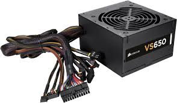
- pół modularny-ma nie które kable podłączone na stałe i można podłączać kable
- modularny-nie ma żadnych kabli podłączonych na stałe i tylko się podłącza 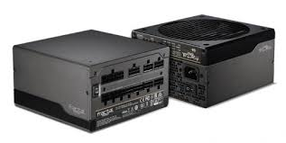
(Tych kabli, które nie są podłączone są w pudełku)Służy to tylko temu, że w obudowie nie ma nie potrzebnych kabli, a zatym idzie porządek.